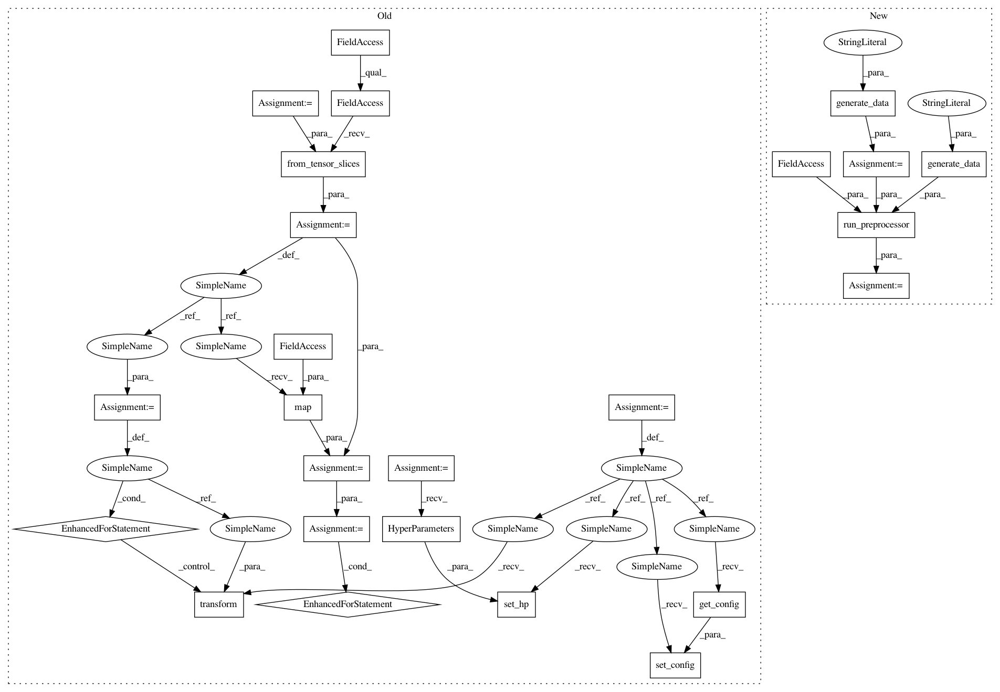

a0351c62548ebddf5c728ec525ad61a4f7827494,tests/hypermodel/test_preprocessor.py,,test_augment,#,111
Before Change
def test_augment():
raw_images = tf.random.normal([1000, 32, 32, 3], mean=-1, stddev=4)
augment = preprocessor.ImageAugmentation(seed=5)
dataset = tf.data.Dataset.from_tensor_slices(raw_images)
hp = kerastuner.HyperParameters()
augment.set_hp(hp)
augment.set_config(augment.get_config())
for a in dataset:
augment.transform(a, True)
def map_func(x):
return tf.py_function(functools.partial(augment.transform, fit=True),
inp=[x],
Tout=(tf.float32,))
new_dataset = dataset.map(map_func)
for _ in new_dataset:
pass
assert isinstance(new_dataset, tf.data.Dataset)
def test_feature_engineering():
After Change
def test_augment():
dataset = common.generate_data(dtype="dataset")
new_dataset = run_preprocessor(preprocessor.ImageAugmentation(seed=common.SEED),
dataset,
common.generate_data(dtype="dataset"),
tf.float32)
assert isinstance(new_dataset, tf.data.Dataset)
def test_feature_engineering():
In pattern: SUPERPATTERN
Frequency: 4
Non-data size: 25
Instances
Project Name: keras-team/autokeras
Commit Name: a0351c62548ebddf5c728ec525ad61a4f7827494
Time: 2019-09-29
Author: jhfjhfj1@gmail.com
File Name: tests/hypermodel/test_preprocessor.py
Class Name:
Method Name: test_augment
Project Name: jhfjhfj1/autokeras
Commit Name: a0351c62548ebddf5c728ec525ad61a4f7827494
Time: 2019-09-29
Author: jhfjhfj1@gmail.com
File Name: tests/hypermodel/test_preprocessor.py
Class Name:
Method Name: test_normalize
Project Name: jhfjhfj1/autokeras
Commit Name: a0351c62548ebddf5c728ec525ad61a4f7827494
Time: 2019-09-29
Author: jhfjhfj1@gmail.com
File Name: tests/hypermodel/test_preprocessor.py
Class Name:
Method Name: test_augment